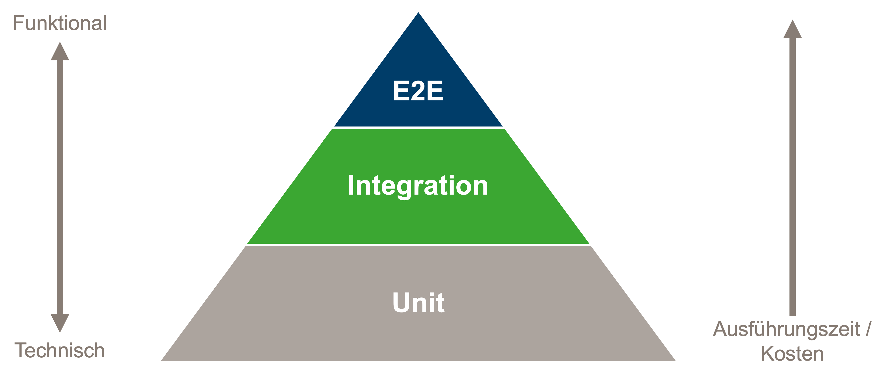
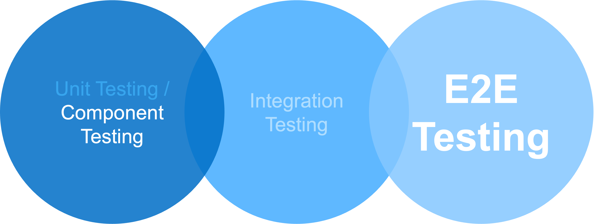

Cypress
Die Kunst der simplen E2E Tests
- Milena Fluck
- adesso SE
- Senior Software Engineer
- Hannah Ebert
- adesso SE
- Software Architektin
Agenda
- Grundlagen Testing
- Cypress Intro
- Übungen
Grundlagen Testing
Warum testen wir überhaupt?
5 Gründe, warum Tests unsere Nerven (und Projekte) retten
Bugs finden
Jeder Tag ohne Hotfix, ist ein guter Tag!Erweiterbarkeit
Deine Kolleg*innen werden es dir danken, wenn Sie wenn sie neue Features hinzufügen ohne vorhandenes kaputt zu machen.Wartbarkeit
damit der nächste Bugfix nicht zu einer archäologischen Ausgrabung wird.Grenzfälle
Weil es immer jemanden gibt, der Dinge anders benutzt, als sie gedacht sind.Dokumentation
Weil niemand Lust hat, nach einem Jahr wieder herauszufinden, was ‘doSomething()’ eigentlich tut.Graue Theorie
Automatisiertes Testen
vs.
Manuelles Testen
Manuelles Testen
- Zeitaufwändig
- Monoton
- Fehleranfällig
- Subjektiv
- Teuer
Automatisiertes Testen
- Automatisiert
- Wiederholbar
- Skalierbar
- Zeitersparnis
- Qualitätssicherung
Testpyramide
Unit Testing
Was ist Unit Testing?
Testen von einzelnen Units
Automatisiert
Isoliert
Was ist eine Unit?
Der kleinste Baustein einer Applikation
Funktion/ Klasse
Grundannahme:
Wenn alle Units korrekt funktionieren, dann funktioniert auch die Applikation korrekt.
Integration Testing
Integration Testing
Funktionieren die einzelnen Komponenten auch im Zusammenspiel miteinander?
- Verknüpfung von voneinander unabhängigen Komponenten
- Bspw. Verknüpfung von Daten, Anwendungen, APIs und Geräten
End-To-End Testing
End-To-End Testing
- Simulieren das echte Nutzererlebnis
- Werden oft von speziellen QA-Teams geschrieben
- Sind teuer und haben lange Ausführungszeiten => müssen sich lohnen
Keine harten Grenzen

Und was macht Cypress?
Testen – mal so ganz generell
Das Triple-A-Prinzip

Erwartungen formulieren - mit Chai
- include
- exist
- equal
- be.true / be.false / be.bull

Developer Experience
Die Cypress Philosophie
Batteries included - Das Cypress Setup
- Testing Framework: Mocha
- Assertion Library : Chai
- Launcher/ Test Runner
- Reporter
- Browser: Electron
- Proxy (für Request Stubbing)
Die Cypress Desktop App
- Vereinfacht das Schreiben der Tests
- Visuell aufbereitetes Feedback
- Timetravel
- Übersichtliches Debugging
Sehr einfaches Mocking/ Stubbing
Wenn die Realtiät mal wieder nicht perfekt ist.
Wundervolle Dokumentation
- ... um Cypress zu lernen.
- ... um die Best Practices zu erfahren.
- ... um CI aufzusetzen.
- ...
Let's see the magic
$ npm install –-save-dev cypress
$ npx cypress open
Testaufbau
describe('login', () => {
beforeEach(() => {
cy.visit('http://localhost:4200/');
})
it('should successfully login', () => {
cy.contains('Bingo');
cy.get('[data-cy="login-form"]')
.should('contain', 'Anmeldung');
})
})
Assertions vs. Commands
Commands sind Aktionen, die auf der Seite ausgeführt werden.
Assertions sind Überprüfungen, die das Verhalten der Seite testen.
cy.get('my-selector') // Command
.should('have.length',5); // Assertion
Commands: Query vs. Non-Query
Query: Elemente finden
Non-Query: Aktionen ausführen
=> Query Commands geben ein Element zurück, Non-Query Commands nicht.
cy.get('button') // Query Command
.click(); // Non-Query Command
Custom Cypress Command: Login
Cypress.Commands.add('login',(username: string,
password: string): void => {
cy.visit('login');
cy.get('[data-cy="username"]')
.type('cypress', {log: false});
cy.get('[data-cy="password"]')
.type('bingo', {log: false});
cy.get('[data-cy="submit-button"]')
.click()
.should('not.exist');
cy.url()
.should('eq', `${Cypress.config().baseUrl}/bingo-board`);
cy.get('.board-title').should('have.text', 'Bingo');
});
Chain of Commands - Retry Logic
Chain of Commands - Retry Logic
cy.get('my-selector')
.should('have.length',5)
.eq(1)
.should('contain', 'magic');
Chain of Commands - Retry Logic
cy.get('my-selector')
Chain of Commands - Retry Logic
cy.get('my-selector')
.should('have.length',5) // FAIL
Chain of Commands - Retry Logic
cy.get('my-selector')
Chain of Commands - Retry Logic
cy.get('my-selector')
.should('have.length',5)
Chain of Commands - Retry Logic
cy.get('my-selector')
.should('have.length',5)
.eq(1)
Chain of Commands - Retry Logic
cy.get('my-selector')
.should('have.length',5)
.eq(1)
.should('contain', 'magic');
Chain of Commands - Retry Logic
cy.get('my-selector')
.should('have.length',5)
.eq(1)
.should('contain', 'magic'); // FAIL
Chain of Commands - Retry Logic
cy.get('my-selector')
Chain of Commands - Retry Logic
cy.get('my-selector')
.should('have.length',5)
Chain of Commands - Retry Logic
cy.get('my-selector')
.should('have.length',5)
...
Get vs. Find vs. contains
cy.get() - Findet ein Element
cy.find() - Findet ein Kind-Element
cy.contains() - Findet ein Element anhand des Textes
cy.contains('Bingo');
cy.get('[data-cy="login-form"]')
.find('h3')
.should('contain', 'Anmeldung');
Best Practices
Resiliente Tests
Verwende stabile Selectoren (z.B. `data-cy`), um auf UI-Elemente zuzugreifen.
Schreibe unabhängige Tests
Tests sollten isoliert und unabhängig voneinander sein.
DRY - Don't repeat yourself (too often)
Verwende Custom Commands - Erstelle wiederverwendbare Befehle für häufige Aktionen, um den Testcode zu vereinfachen.
Aber
KISS - Keep It Simple Stupid
Nicht alles muss in ein Command - Halte die Tests so einfach wie möglich, um die Wartbarkeit zu erhöhen.
Nutze `cy.fixture()` für Testdaten
Lade Testdaten aus externen Dateien, um die Tests sauber und wartbar zu halten.
Nutze `cy.intercept()` für API-Stubbing
Simuliere API-Antworten, um Tests schneller und zuverlässiger zu machen.
Setze den Zustand vor jedem Test zurück
..., um Seiteneffekte zu vermeiden (`beforeEach`).
Verwende `cy.wait()` nur, wenn es WIRKLICH nötig ist
Halte deine Testdaten realistisch und aktuell.
Zum Repo auf GitHub
https://github.com/hannahebert/js_days_cypress